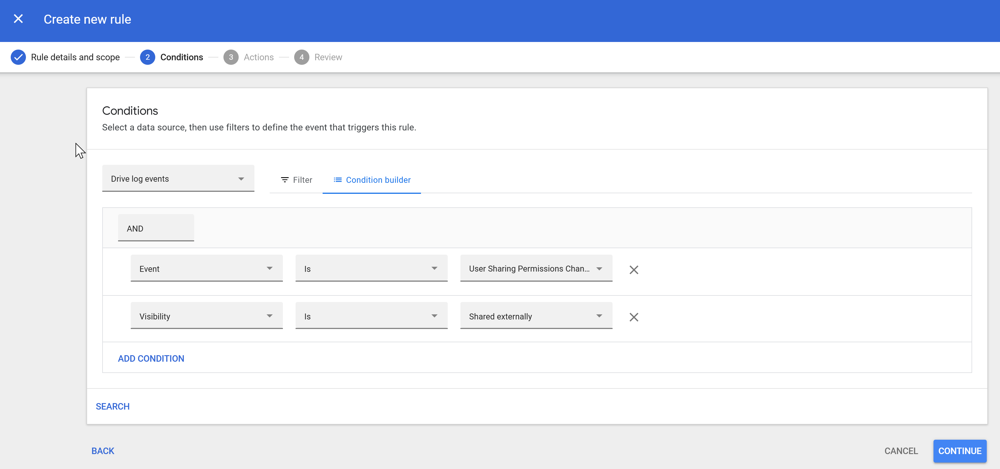
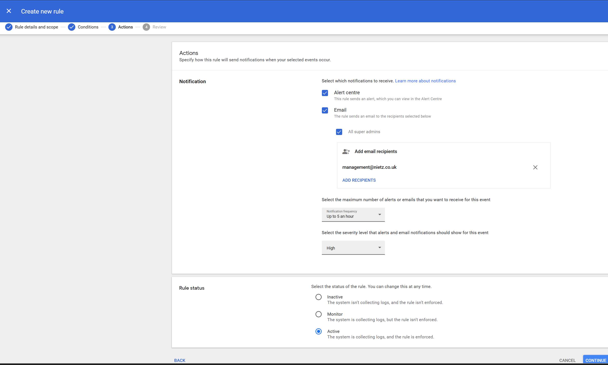

Overview
This section demonstrates how data protection controls were implemented in Google Workspace to reduce the risk of data leakage and provide visibility into high-risk user behaviour.
Security model:
Prevention → Detection → Alerting
Prevention → Detection → Alerting
Drive Sharing Controls (Organisational Baseline)

Default Drive sharing configuration at organisational level
Configuration
- External sharing: Enabled
- Link sharing: Restricted
- Access Checker: Recipients only
- External distribution: Controlled
Why this matters:
Establishes a secure default while still allowing controlled collaboration.
Establishes a secure default while still allowing controlled collaboration.
Finance OU – Restricted Sharing Policy

Stricter sharing controls applied to Finance organisational unit
Configuration
- External sharing: Disabled
- Policy override: Yes
- Access Checker: Recipients only
Real-world scenario:
Sensitive financial data is restricted from leaving the organisation to prevent data leaks.
Sensitive financial data is restricted from leaving the organisation to prevent data leaks.
Security Impact
- Prevents external data exposure
- Enforces departmental data boundaries
- Demonstrates OU-based policy segmentation
Detection – External Sharing Activity Rule

Rule configured to detect external sharing events
Rule Logic
- Event: User sharing permissions change
- Condition: Visibility = Shared externally
Why this matters:
Enables real-time detection of potential data leakage.
Enables real-time detection of potential data leakage.
Alerting Configuration

Alerting configuration for external sharing events
Configuration
- Alert Centre: Enabled
- Email notifications:
- Super administrators
- management@nietz.co.uk
- Severity: High
- Frequency: Up to 5 per hour
Why this matters:
Ensures rapid awareness of high-risk activity.
Ensures rapid awareness of high-risk activity.
Rule Activation

Rule enabled and actively monitoring events
- Continuous monitoring enabled
- No manual intervention required
- Real-time detection active
Alert Validation (Test Scenario)

Alert triggered after external file sharing test
Outcome
- User performing the action identified
- External recipient captured
- File name and permission change logged
Key point:
End-to-end detection and alerting workflow successfully validated.
End-to-end detection and alerting workflow successfully validated.
Platform Limitations
Data Residency
- Not available on Business Standard
- Enterprise would allow EU data region control
Data Retention & eDiscovery
- Google Vault not included in this plan
- Would enable retention policies and legal holds
Summary
- External sharing controlled at organisational level
- Sensitive departments restricted via OU policies
- External sharing events monitored in real time
- Alerts generated automatically for investigation
This implementation demonstrates a real-world approach to preventing,
detecting, and responding to data leakage in Google Workspace.